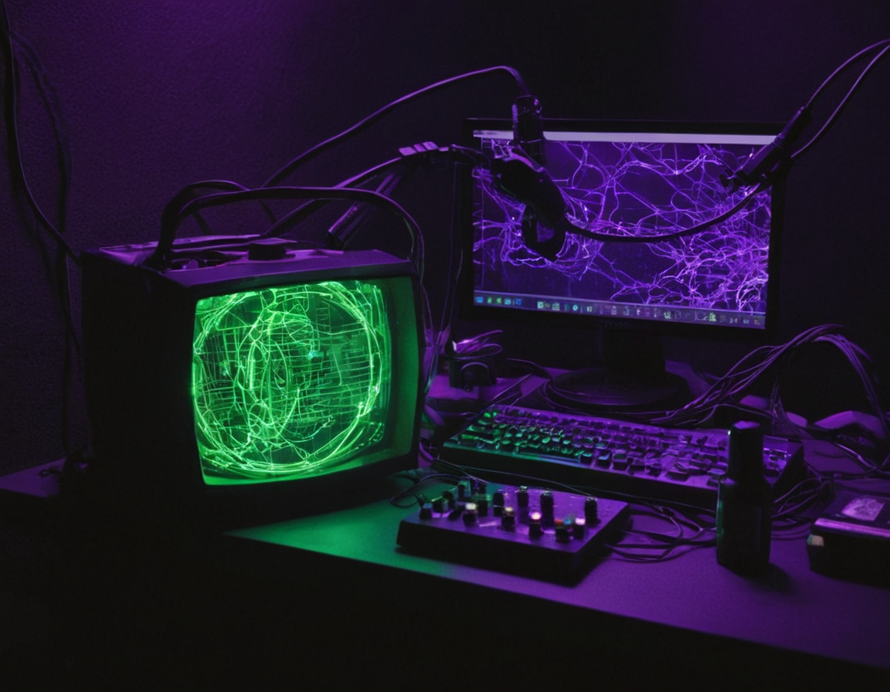

Mixins en Sass: Funciones para tu CSS
¿Qué son los Mixins?
Los mixins son una de las características más poderosas de Sass, permitiéndote crear bloques de estilos reutilizables que pueden aceptar parámetros, similar a las funciones en lenguajes de programación.

¿Por qué usar mixins?
Los mixins te ayudan a:
- Eliminar código duplicado
- Mantener estilos consistentes
- Simplificar cambios globales
- Crear componentes modulares
Sintaxis Básica
Un mixin se define con @mixin y se incluye con @include:
Sass (Definición)
@mixin reset-list {
margin: 0;
padding: 0;
list-style: none;
}
@mixin box-shadow($x, $y, $blur, $color) {
box-shadow: $x $y $blur $color;
-webkit-box-shadow: $x $y $blur $color;
-moz-box-shadow: $x $y $blur $color;
}Uso
.nav {
@include reset-list;
}
.card {
@include box-shadow(0, 2px, 10px, rgba(0,0,0,0.1));
}Mixins Avanzados
Los mixins pueden incluir lógica condicional y bucles:
@mixin responsive($breakpoint) {
@if $breakpoint == phone {
@media (max-width: 600px) { @content; }
} @else if $breakpoint == tablet {
@media (max-width: 900px) { @content; }
} @else if $breakpoint == desktop {
@media (min-width: 1200px) { @content; }
}
}
// Uso:
.header {
font-size: 2rem;
@include responsive(phone) {
font-size: 1.5rem;
}
}Conclusión
Los mixins son herramientas fundamentales para crear CSS mantenible y escalable. Dominarlos te permitirá:
- 1. Reducir drásticamente la repetición de código
- 2. Crear sistemas de diseño consistentes
- 3. Implementar lógica compleja en tus estilos
- 4. Mejorar la legibilidad de tu código